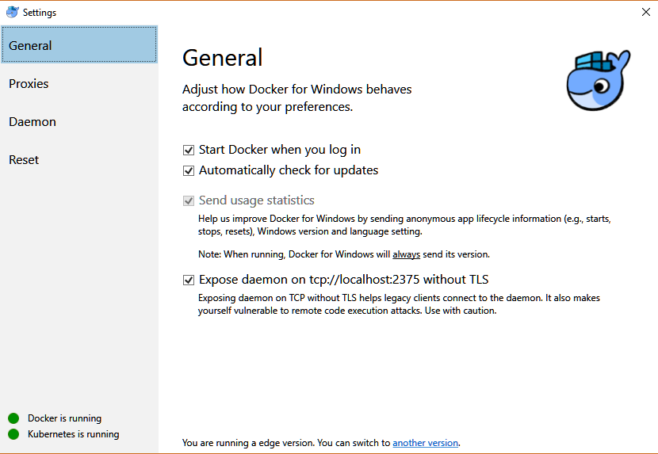
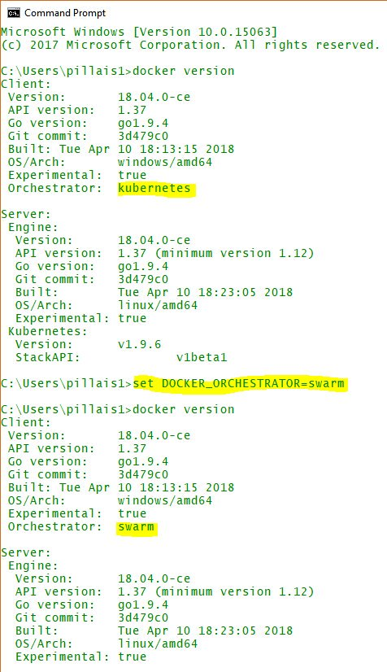

If you are using latest Docker for Windows 18.02 CE Edge or higher it comes by default Docker Orchestrator as “Kubernetes”. For me at the time of writing this post I don’t see an option to switch it to Docker Swarm from the Settings menu.

If you ever need to change the Orchestrator to Swarm/Kubernetes you may set the environment variable DOCKER_ORCHESTRATOR to appropriate value as shown below
|
|
